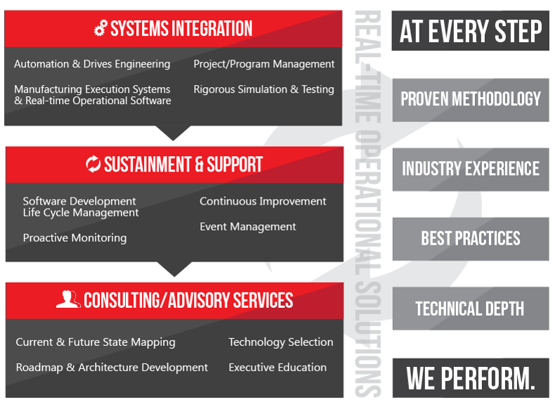

Brock Solutions is an engineering solutions company that specializes in the implementation of real-time solutions for both the manufacturing and transportation industries. Brock is a global leader in these professional services and has been around since 1992, with over 10,000 global projects.

Brock Solutions offers its clients a variety of services, including system integration, sustainment, on-going support and consulting or advisory services. They work with many companies in the same space to provide clients with the best possible solution to their real-time needs. Some of the most popular projects that Brock was directly involved in would include, the SmartBag handling systems commonly used in many popular airlines. They have also worked on automation software for many well-known manufacturing companies such as Chrysler, Coca-Cola, GM, L'Oreal and Ford. In their transportation logistics department, they have improved the workflow of companies such as Walmart, Canada Post, Puralator, Delta Airlines and even Air Canada.
Official Title: Full-Stack Developer
Description:
Brock Solutions is an engineering solutions and professional services company specializing in the design, build and implementation of real-time solutions for broad-based industrial/manufacturing and transportation/logistics organizations globally. With approximately 400 employees in Canada and the U.S., As a developer at Brock Solutions, you will get the opportunity to explore the newest technologies, designs, platforms, and programming concepts. Innovative ideas are encouraged and used throughout the lifecycle of our applications.
My Role:
* Understand and contribute to a growing, complex stack
* Test, review and debug code written by me
* Add new as well as contribute to existing modules within the stack
* Follow team-based procedures for code creation, testing and submission
Expectations:
* Reading and interpreting big data
* Have a strong desire to learn new technologies
* Experience with: Java, Version Control, Team-Based Development
* Efficient and effective problem solving
My Time at Brock Solutions:
During my 4 month co-op at Brock Solutions I worked on a team which serviced the client hexcel.com The team was spread out between the Kitchener office, where I worked, and the Dallas office. This added an interesting aspect to the team dynamic that I had never experienced before. I was greatful for the opportunity to experience having a team that was expected to work cohesively together despite being so far apart. My Expectations:
* Gain a firm understanding of the existing stack and become familiar with common practices
* Build up confidence with the Java programming language as well as its JUnit Testing approaches
* Acquire knowledge of programming on a Windows machine, using Perforce, JIRA and other software
* Communicate effectively with the team about current tasks
Brock Solutions was a great place to work and gain experience relevant to my career goals. Being that I had previously worked in a startup company, there was quite a 'cultural shock' when I first started. The dynamics of the two workplaces are much different, and I feel grateful for being able to experience the structured, team-based, goal-driven environment at Brock Solutions. The incredible team atmosphere was enlightening, there was always a team member available to assist me in even the smallest of tasks. The goal-oriented atmosphere was also something I found valuable, having constant updates on timelines, release dates, due dates for proposals, etc. As a developer I sometimes worry about the speed at which I get things done, having frequent updates on the timeline for project completion takes a lot of that stress away.
At Brock Solutions all of the developing is done on Windows machines, which was a great learning opportunity for me since I barely use windows at all anymore and have never coded on Windows before. I think that because I have a passion for cybersecurity that I should definitely have a strong understanding of how Windows machines work. I had only ever used Git as a version control system before coming to Brock, where instead of Git's Distributed Version Control style, they use a program called Perforce which is a Centralized Version Control. This was also an excellent chance for me to pick up new skills and become more familiar with different software.